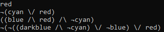

Bethany Davis
Home
Personal Projects
- Pi Pico Keyboard
- 2024
- Circuitpython/Python
- A fully functional HID keyboard and trackpad, based off a Pi Pico, and a pimoroni trackball
- Original code created in C++, then translated into python, with additional functionality added afterwards
- Ludum Dare 53 "Delivery"
- 2023
- C#, Magicavoxel
- A short game, really a snippet of a larger planned project, written in C# using Unity.
- Primarily based off the mechanics in the wii play tank minigame, with a plan to expand further
- Ida
- 2021
- C#, Magicavoxel
- Game in the style of Ico, using stop motion voxel animation
- Currently abandoned, but significant dev work has gone into the mechanics
- Shuttle Engine
- 2020
- C#, OpenTK, OpenAL
- A light weight engine designed to do the absolute minimum to run a game
- Designed to run with other existing projects, with plans to run it on low power consoles, such as the 3DS or PS Vita
- 0xBot
- 2018
- Java
- A console based computer opponent for Naughts and Crosses
- Reads the board to check for given scenarios, and asses threats and potential openings
- Includes additional features, such as possible variance to allow the AI to make mistakes
- Astron
- 2018
- Java
- My first attempt at making a game
- A recreation of a family favourite board game, which is rare and falling apart
Coursework
- Project and dissertation (Year 4)
- 2021
- C#, OpenTK, OpenAL
- Ongoing project creating a light weight state machine AI with simulated emotions
- The project is designed for use within Shuttle Engine
- Also allows for testing in a more realistic scenario than within a third party engine
- Team Project

- 2021
- C++, physX ,Wwise, IMGUI, OpenGL
- A small multiplayer game based on work from the Advanced Game Technologies module
- Worked primarily on level and obstacle design
- Advanced Graphics
- 2020
- C++, openGL, GLSL
- A test scene inspired by cyberpunk style environments
- Uses advanced rendering techniques, such as deferred rendering, and environment mapping
- Advanced Programming
- 2020
- C++
- An ASCII maze game which plays itself
- Uses techniques such as A* path finding to complete the game automatically
- Checks to make sure that a maze can be completed
- Mazes can be saved to files, and loaded from them
- Games Development
- 2020
- GDevelop
- A short demo game called "Fight Knight"
- Based loosely on the "Souls" combat style
- Includes original music, artwork and animations
- Project and dissertation (Year 3)

- 2019
- C#, Unity
- Designed to generate structure for rogue-like levels
- Uses set theory and a custom ALL-SAT solver to check possible completion, and ensure optimal complexity
- Can be used to verify existing games, run as a single use program to generate a level which can be saved, or at runtime
- Designed to generate structure for rogue-like levels
- Also created for use as a "black box" middleware style tool
Snippets
- iPod modification
- 2020
- A small scale project adding flash memory to iPods (iPod Videos and iPod Mini 2nd Gen)
- Also included refurbishing with new parts, such as new housing and batteries
- Mixer

- 2020
- Home made 4 in 1 out 3.5mm audio mixer
- Custom made to work with synthesizers in a "DAW-less" set up
- Used cheap parts and soldering to get a simple working product